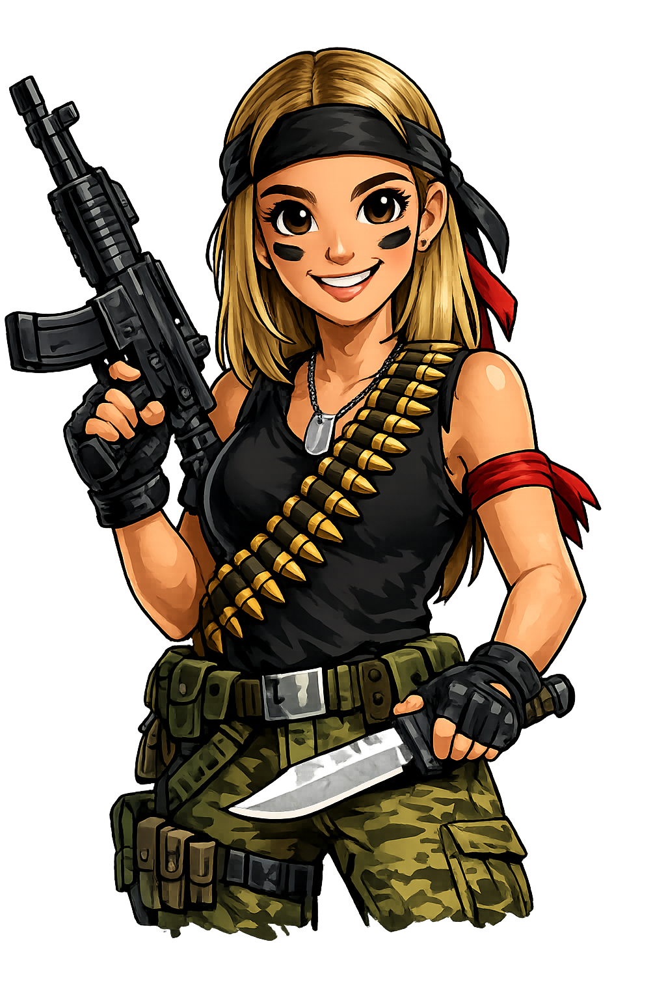

В мире, где женщин учили ждать принца, появилась она: не принцесса, не служанка, не фея с крыльями. Просто девочка, которую с детства учили трём вещам: жди принца, будь удобной, не злись.
Но она явно не собиралась следовать этому заезженному сценарию.
Поэтому собрала всю волю в кулак — и сама пошла навстречу приключениям. Сама находила новые страны, новые языки, новые идеи, новые проекты. И, главное, новых людей, которым хочет помочь.

Она не стала ждать, пока её спасут от невидимой опасности, но стала той, кто спасает первой.
Так началась история Ксюши-Рэмбо. Той, которая защищает права женщин. Той, которая не верит в принцев на белых конях (потому что принцы обычно не знают, что такое равноправие). Той, кто вдохновляет, направляет и делает мир чуть справедливее — одного разговора за раз.